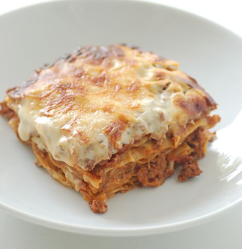
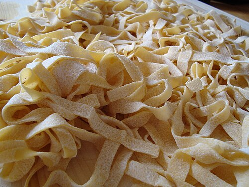
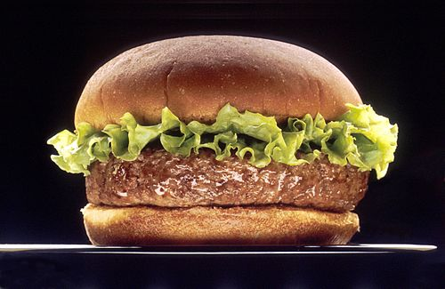

Favorite Dishes
Here are some of my favorite dishes
Lasagna is a type of pasta, possibly one of the oldest types, made of very wide, flat sheets.Either term can also refer to an Italian dish made of stacked layers of lasagna alternating with fillings such as ragù (ground meats and tomato sauce) , béchamel sauce, vegetables, cheeses (which may include ricotta, mozzarella, and parmesan) , and seasonings and spices. The dish may be topped with grated cheese, which becomes melted during baking. Typically cooked pasta is assembled with the other ingredients and then baked in an oven. The resulting baked pasta is cut into single-serving square or rectangular portions.
Fettuccine is a type of pasta popular in Roman cuisine. It is descended from the extremely thin capelli d'angelo of the Renaissance but is a flat, thick pasta traditionally made of egg and flour. It is wider and thicker than, but similar to, the tagliatelle typical of Bologna, which are more common elsewhere in Italy and often used as a synonym. Spinach fettuccine is made from spinach, flour, and eggs.
A hamburger, or simply burger, is a sandwich consisting of fillings—usually a patty of ground meat, typically beef—placed inside a sliced bun or bread roll. Hamburgers are often served with cheese, lettuce, tomato, onion, pickles, bacon, or chilis; condiments such as ketchup, mustard , mayonnaise, relish, or a "special sauce", often a variation of Thousand Island dressing; and are frequently placed on sesame seed buns. A hamburger patty topped with cheese is called a cheeseburger.
